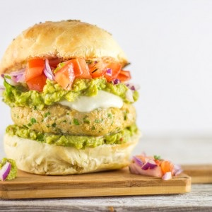

Guacamole Burger

Aujourd’hui et comme chaque début de semaine (depuis presque deux ans maintenant) je vous retrouve avec une recette ultra gourmande (je garde les recettes plus raisonnables pour le milieu de la semaine^^). Ce matin j’ai donc décidé de vous parler de mon guacamole burger. Je pense que certains d’entre vous se souviennent de cette recette puisque je vous avais donné un petit avant goût de cet hamburger sur les réseaux sociaux. Ce guacamole burger s’inscrit dans la longue liste des burgers que j’ai créée sans trop savoir comment mais en tout cas je peux vous dire qu’ il correspondait à mes envies ce jour-là.
En réalité, j’ai fait ce burger un paquet de fois au cours de l’année passée mais c’était une torture pour mon chéri de me voir faire les photos mais ça y est cette fois j’ai enfin réussi !
Dans cet hamburger, tout est fait maison ! Que ce soit le steak au poulet (légèrement citronné avec quelques feuilles de coriandre), le guacamole (recette ici) ou encore (et surtout) le pain tout y est passé. Vous trouverez d’ailleurs sur le blog deux recettes de pains à hamburger et pour celui-ci j’ai utilisé celle des « buns maison ». Pour le reste, il ne vous faudra pas grand-chose. Quelques morceaux de tomates, de l’oignon rouge et un peu de mozza (ou beaucoup si vous êtes comme moi et que vous avez du mal à concevoir un burger sans fromage qui coule). Pour ceux qui ont un peu la flemme de préparer tout ça, vous pouvez tout aussi bien faire mariner du poulet dans du citron et un peu d’huile d’olive, acheter du guacamole et des pains industriels ça c’est à vous de voir ! Il me semble que le géant des fast food (monsieur M) avait proposé un burger avec de l’avocat il y a un an de ça alors pour ceux qui avaient aimé je pense que vous tomberez amoureux de cette recette!! Je vous laisse la découvrir et j’espère qu’elle vous plaira autant qu’à nous. 🙂
Ingrédients
- Farine - 680g
- Levure boulangère instantanée - 2 càc
- Sucre en poudre - 4 càs
- Sel - 2 càc
- Beurre - 50g
- Eau - 14cl
- Lait - 18cl + 2càs pour la dorure
- Jaunes d'oeufs - 4
- Sésame, pavot etc pour la déco
- Blancs de poulet - 300g
- OEuf - 1
- Chapelure - 80g
- Coriandre - 1/2 bouquet
- Citron - jus d'un demi citron
- Huile d'olive - 2 càs
- Paprika (facultatif) - 2 càc
- Avocats murs - 2 gros
- Oignon nouveau - 1
- Coriandre fraîche - 1/2 bouquet
- Citron vert - jus d'un demi citron vert
- Tabasco - qques gouttes selon vos goûts
- Sel - 1 pincée
- Tomates - 1
- Mozzarella - 125g
- Tomates - 1
- Oignon rouge - 1
Instructions
- Couper la tomate en dès ainsi que l'oignon rouge
- Déposez-les dans un bol et arrosez d'un léger filet d'huile d'olive et d'une pincée de sel. Réserver
- Si vous achetez des boules de mozza, essorez-les bien (à l'aide de papier absorbant)
- Couper la mozzarella en rondelles
- Réserver
- Couper le poulet grossièrement
- Dans un saladier, verser le jus de citron, ajouter le poulet et les épices
- Remuer
- Laisser mariner
- Dans un mixeur, verser le poulet avec la coriandre
- Mixer le tout
- Diviser la farce en deux
- Former vos steaks (je me suis aidée d'un emporte-pièce rond)
- Faites les cuire dans une poêle anti-adhésive jusqu' ce qu'ils soient bien dorés
- Préchauffer le four à 160°
- Couper les buns en deux
- Tartiner de guacamole
- Déposer un steak, une ou deux tranche de mozza
- Tartiner à nouveau de guacamole
- Déposer du mélange tomate-oignon sur le dessus
- Enfourner dans un four chaud pendant 5 bonnes minutes afin que le fromage fonde
- Refermer avec le chapeau
- Déguster!!
Les tips de la communauté
Burger imposant et gourmand avec guacamole riche. Les testeurs soulignent générosité de la garniture (excellente), difficulté de le manger proprement, succès garanti auprès des convives. Steaks de poulet décrits comme gargantuesques.
Astuces
- Les proportions du steak poulet sont généreuses: prévoir pour appétits de lutteurs
- Utiliser pains/buns maison pour meilleur résultat
- Guacamole riche et savoureux justifie le concept
- Produits sains font plaisir même pour non-spécialistes culinaires
Ajustements signalés
- Réduire les portions du steak poulet si pour appétits standards